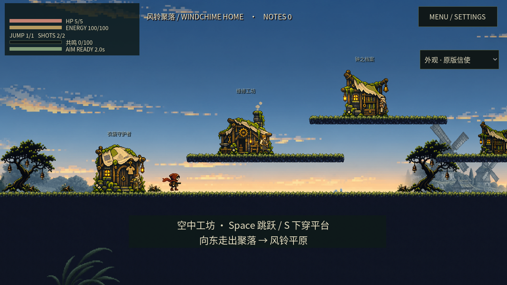
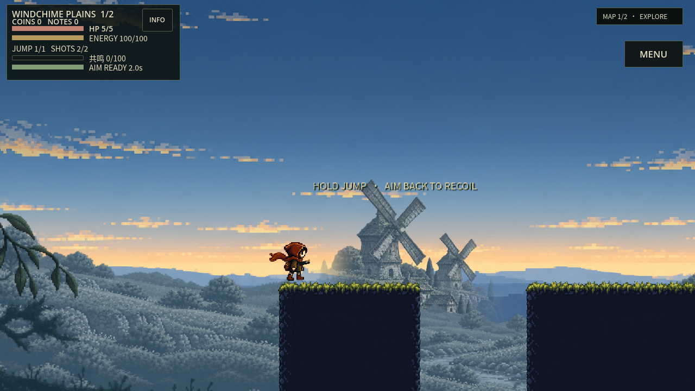
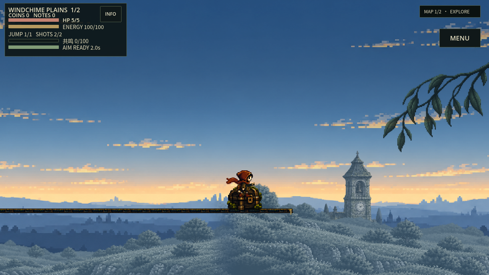
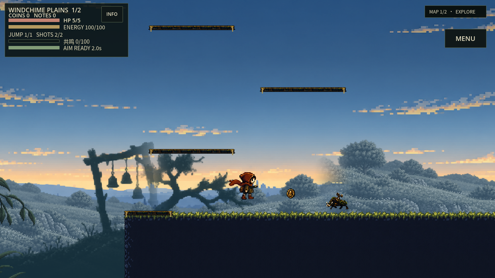
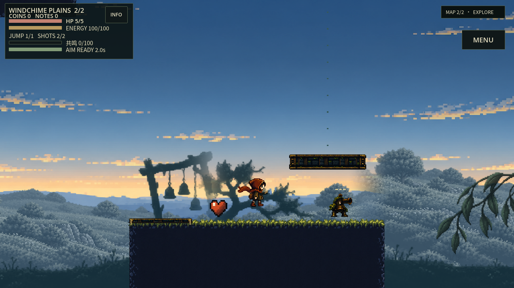

撤掉循环满铺的大聚落中景。连续低草坡作底，小组风车与单座钟塔按固定世界位置分段出现；中间有真正无建筑的窗口。降低建筑的尺寸和对比，让人物与可玩地形成为画面主体。人物前方枝草仍保留。
真实Godot视频与实机图评审页，不是可操作试玩。前4秒为家园真实输入走跳，之后20秒是平原图一8400wu连续镜头扫描；角色留在出生区，这是较快的镜头观察，不能代表正常行走或路线通关。源版本f554e6b，上一轮基线1708017；静图尽量同Seed/镜头，启动时刻与角色姿态有差异，没有同输入before电影。
下载24秒真实MP4 · 30个正式采样镜头 · 连续镜头轨迹 · 当帧地标记录
视频单独保存在预览仓库的不可变媒体提交，保留旧站内容与900MiB预算。抽样显示存在完整无建筑窗口；物件计数不是美术评分。仍待判断空段长度、草坡纹理密度与侧肩雾化是否自然。未跑完整CI，未签用户、全区或真机认可。






